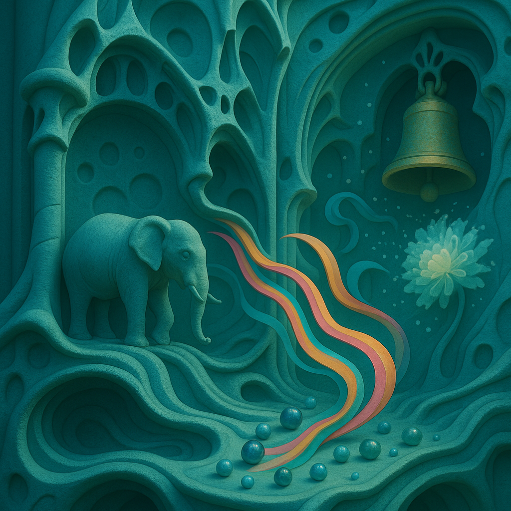

Me imagino un aguamarina
profundo, manso y metal
En donde todas las Stimmungen desembocan por una última vez
Deshaciéndose como colores de cintas en colores de salvados por la campana 🔔
Suena en la totalidad del espectro Live to Tell y pasan ráfagas de
ámbitos de sentido no exploradas –canicas mercuriales de Punkte von Ichs–
la bobba bursts into the grooves
carvando una frialdad cerebral de la mónada que explota,
la crisantema eléctrica se despetala en nieves mercuriales…
Queremos la experiencia del límite en el lenguaje.
Un elefante 🐘…
